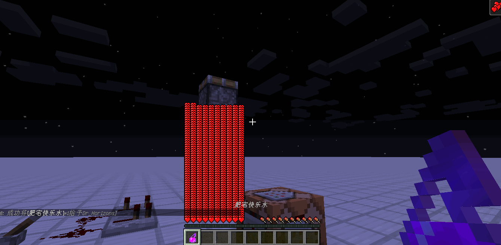
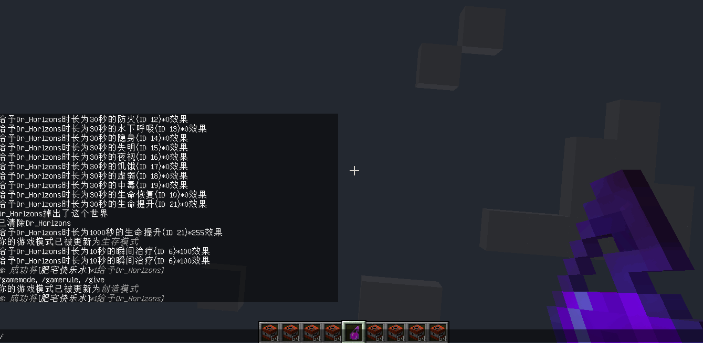

反转药水效果
2020-08-16 • 游戏 • MinecraftJSON •由于一些神奇的BUG特性，高等级效果将会使原效果被反转，而这就使得了一些原版不存在的操作变成了可能。例如，创造模式的玩家不免疫增益效果，只免疫负面效果，而这就使得了如果可以给予创造玩家一种增益效果但实际是负面效果，也是能对创造模式玩家造成伤害的。
除此以外，对跳跃提升药水运用相同的原理也有奇效玩家将会无法跳跃
另外，这个药水所带来的伤害也高的离谱：
也是因为未知原因，死亡后不掉落掉落物*开启死亡掉落的情况下
命令
/* 1.13+ */
/give @p minecraft:splash_potion{CustomPotionEffects:[{Id:6b,Duration:12000,Amplifier:125b,Ambient:0b,ShowParticles:0b}]} 1
/* 1.11-1.12 */
/give @p minecraft:splash_potion 1 0 {CustomPotionEffects:[{Id:6b,Duration:12000,Amplifier:125b,Ambient:0b,ShowParticles:0b}]}
原创内容使用 知识共享 署名-非商业性使用-相同方式共享 4.0 (CC BY-NC-ND 4.0) 协议授权。